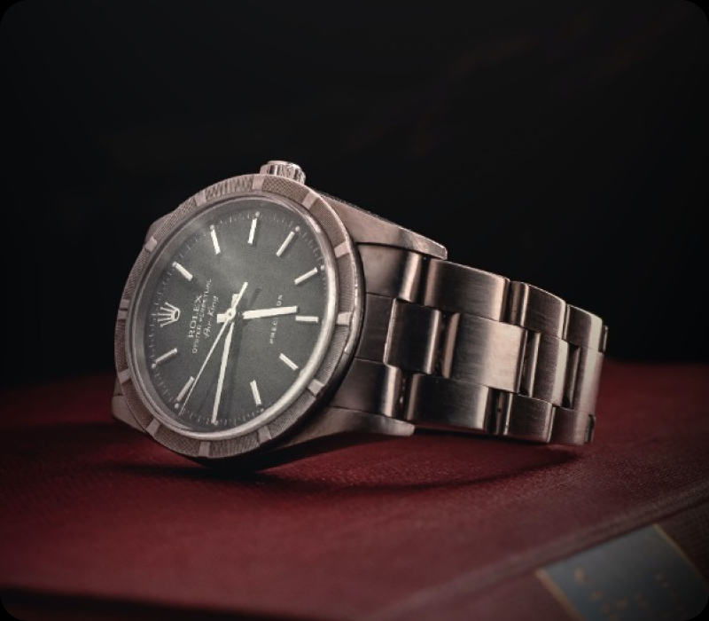
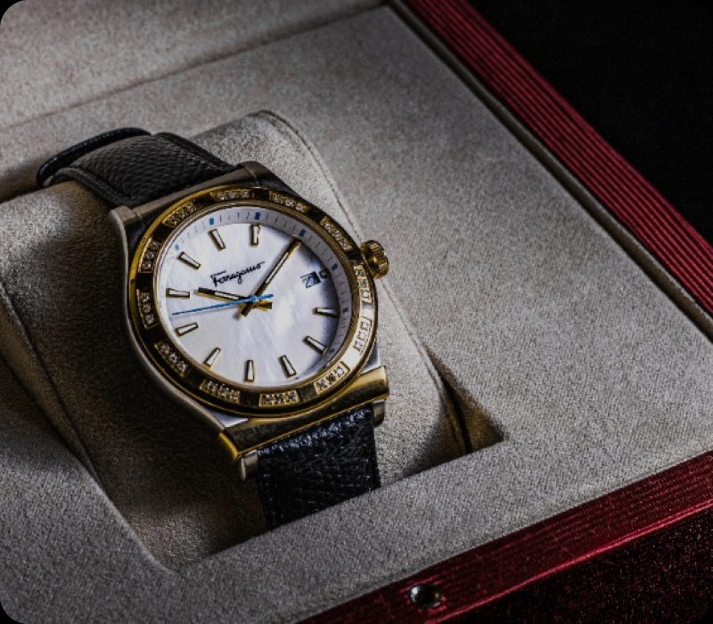
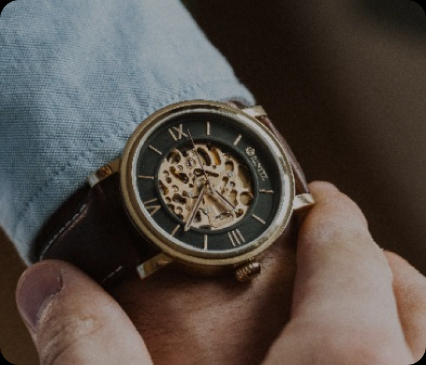
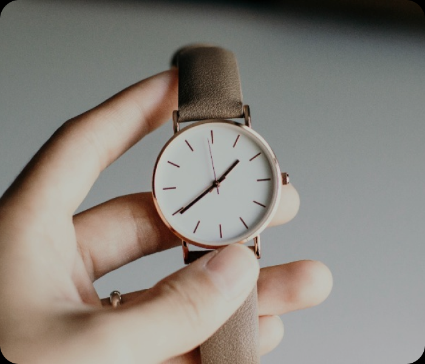

Collezione Astronomy
Orologi galattici.


Arte orologeria italiana
TecTock incarna l'apice dell'arte orologiera italiana, operando come una vera manifattura nel settore di prestigio. All'interno, fonde con maestria la tradizione artigiana con i più avanzati metodi di produzione orologiera.

Orologi di design

Orologi meccanici
Orologi da taschino